Portfolio Details
LiDAR 3D Interactive Model – River Park, Calgary
This project showcases the creation of an interactive 3D web application using LiDAR data from Natural Resources Canada to visualize a section of River Park in Calgary. The workflow included point cloud classification in ArcGIS Pro, the use of Machine Learning to identify power transmission towers and overhead power lines, and RGB colorization using a 2023 orthophoto of Calgary. The processed point cloud was then integrated into an ArcGIS Experience Builder application, allowing users to explore the area in both 2D and 3D, perform measurements, and filter the data interactively. Additionally, a 3D model of Heritage Hall at SAIT was developed to further demonstrate the capabilities of modern GIS technologies for creating engaging and accessible geospatial experiences.
Processing Workflow & Results
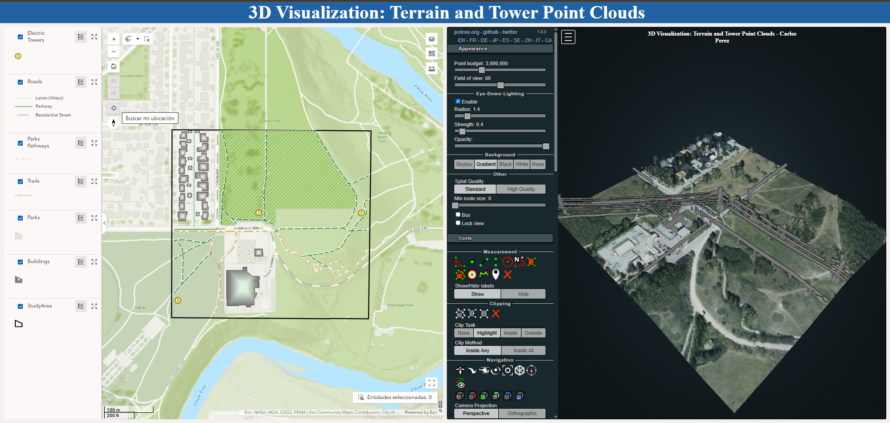
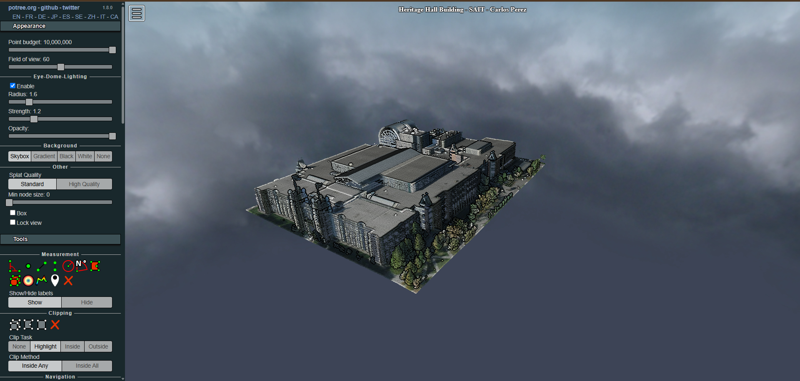
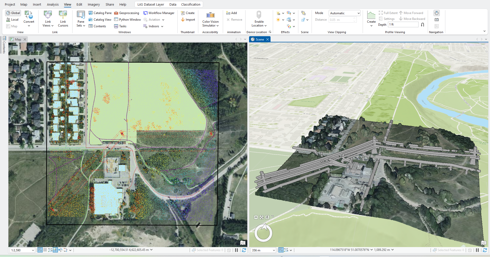
3D Banff Model - GAEA - Blender
A 3D terrain model was created using a digital elevation model (DEM) as the primary data source. The study area chosen was Banff, notable for its stunning geography, complex hydrology, and scenic value.
The DEM was processed in ArcGisPro and further developed in Gaea, where node-based workflows and simulation techniques were used to generate a realistic representation of the terrain and water bodies. The outputs from Gaea were then imported into Blender to create a 3D rendering of Banff, complete with dynamic lighting, clouds, and flowing water.
GAEA Outputs
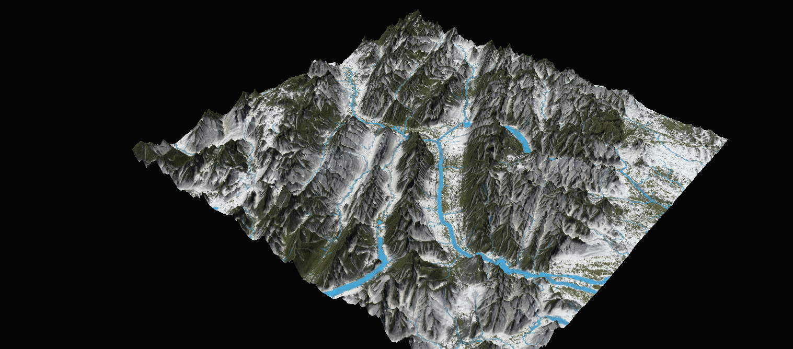
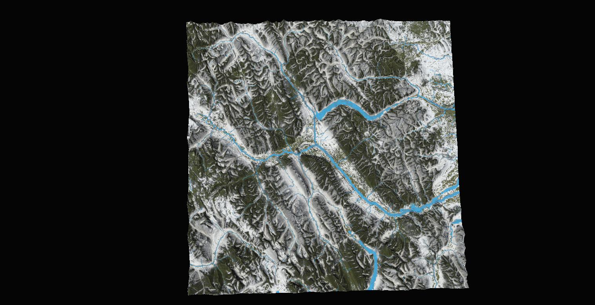
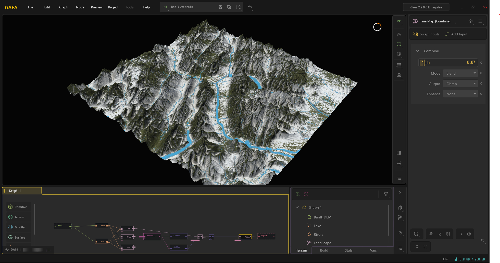
Blender Renderings
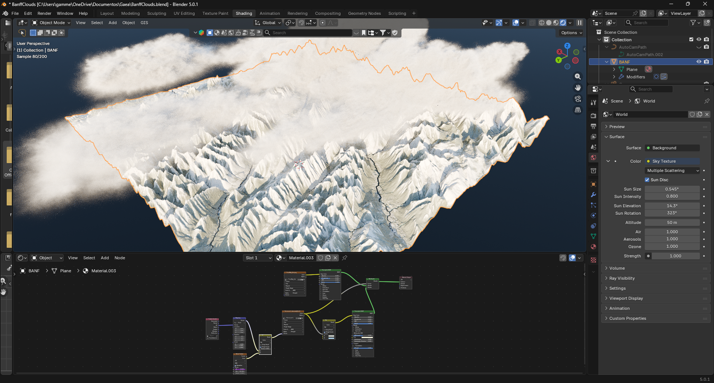
Calgary Tree Canopy Height
A 3D urban forest model of Calgary was created using the Global Sentinel-2 10m Canopy Height 2020 product from ETH Zürich. The project focuses on visualizing urban vegetation structure across the city.
The workflow was developed in R and included raster processing, resolution optimization, and canopy height classification, with support from ArcGIS Pro for geospatial handling.
Using packages such as terra, ggplot2, and rayshader, the data was transformed into a 3D visualization with custom styling and realistic shading.
The final output is a 3D geospatial representation of Calgary's urban canopy, combining GIS analysis and 3D modeling techniques in R.
Canopy Height 3D Visualizations
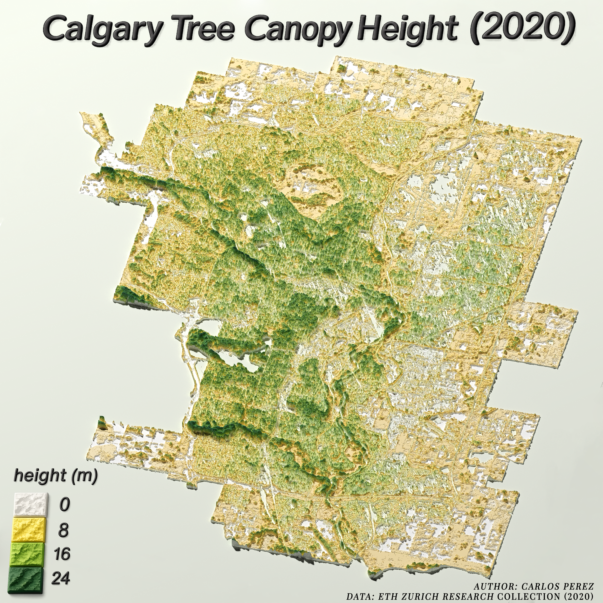
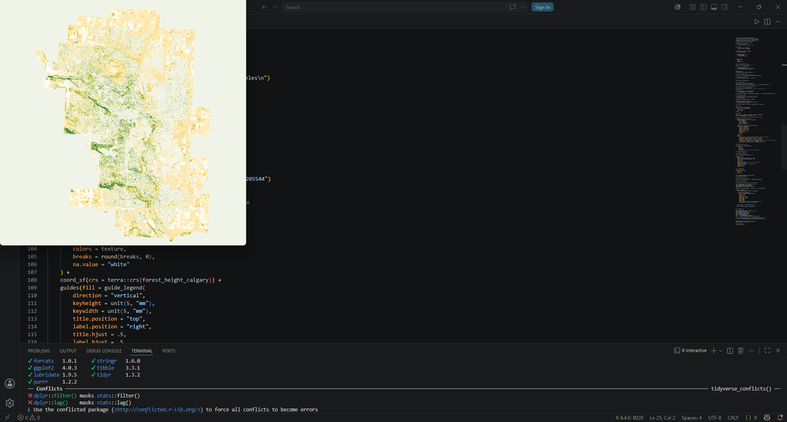
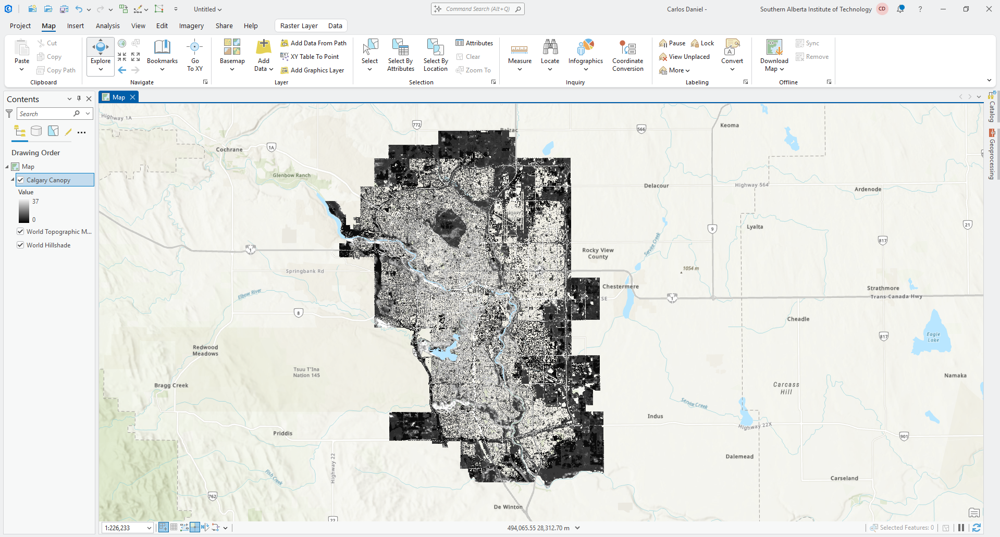
Unreal Engine 5 + Cesium – Interactive 3D Models
Through the use of the Unreal Engine graphics engine and with the support of the Cesium plugin, this engine can be transformed into a GIS tool by leveraging high-resolution imagery repositories from Google Earth Engine for the interactive design of maps. In this case, two major cathedrals are represented: the first is St. Peter's Basilica, and the second is Ulm Minster.
Cathedral Visualization and Rendering Process
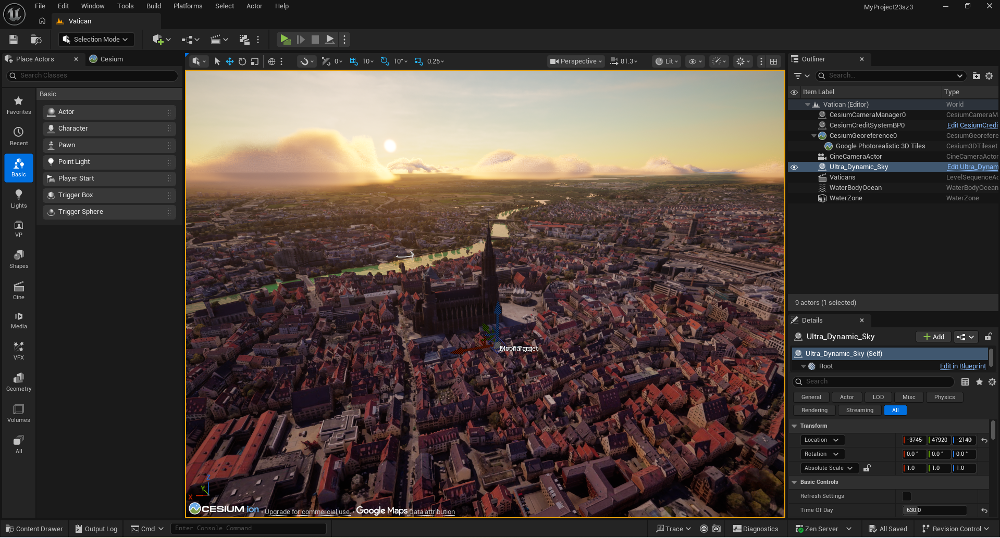
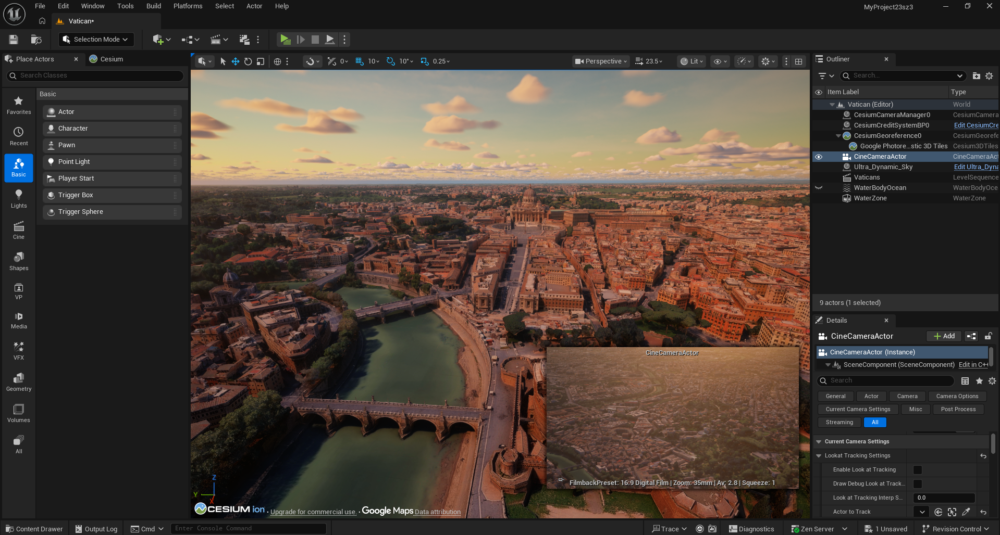
Calgary – Real-Time GIS Integration with Unreal Engine 5
Another demonstration of how Unreal Engine 5 is integrated with real GIS data to create architectural visualizations and detailed 3D environments, this time for the City of Calgary, combining spatial modeling, geolocation, and real-time rendering.
GIS Standalone Tools
Sentinel & Landsat Imagery Downloader Tool
This is a standalone tool that enables the processing and automated download of satellite imagery directly from Landsat and Sentinel satellites to obtain NDVI calculated automatically. This is achieved through integration with Google Earth Engine, which allows access to the different image repositories available on the platform. The tool is useful for the rapid visualization of sites of interest and for providing a general understanding of what may be occurring in a given area. Additionally, it generates statistical files related to NDVI. The tool was packaged into a .exe file so that non-GIS users and those without Python installed can use it easily.
Remote Sensing Vegetation Change Detection and Analysis Tool with AI Assistance
This second standalone tool allows the end user to process images from the Sentinel satellite through integration with Google Earth Engine, providing access to the available image repositories. As a result, it generates an interactive HTML map that displays vegetation changes over different periods of time. Additionally, it downloads TIF files so they can be used and analyzed in ArcGIS Pro.
This tool employs artificial intelligence in two ways: first, to remove clouds from Sentinel-2 images, and second, as a results interpreter that facilitates the reading and understanding of the data for users who are not familiar with GIS.
Spatial Distribution of White People in California
This map aims to illustrate the spatial patterns in the distribution of the White population in the state of California, United States. It shows a clear pattern in which populations are more concentrated toward the northern region of the state, while this percentage decreases noticeably toward the south. These types of maps make it possible to visualize demographic patterns in a simple and highly understandable way.
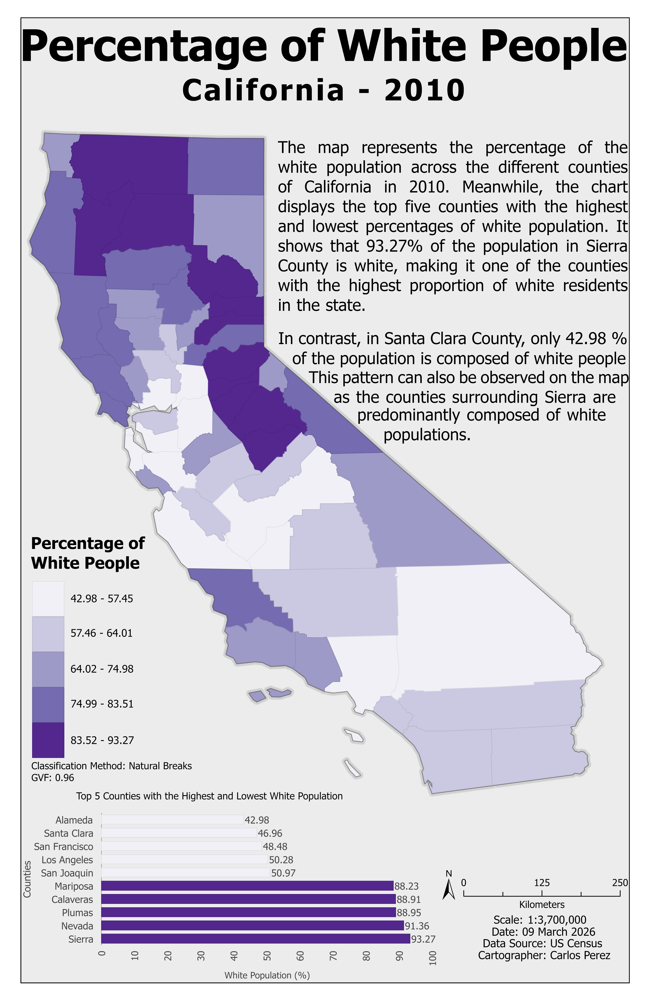
Distribution of Aviation Accidents in California
One of the states with the highest number of aviation accidents involving aircraft is the state of California, with approximately more than 600 accidents recorded between 2000 and 2025. The distribution and frequency of aviation accidents occurring in this state are closely linked to the numerous airports and private flights operating daily in California, as well as to the complex geography of the region. The following map illustrates some of these incidents. ✈️🗺️
3D Terrain Visualization with LiDAR and OpenStreetMap
This project presents a high-quality 3D terrain visualization created by integrating LiDAR-derived Digital Elevation Models (DEM) with OpenStreetMap vector data. Using ArcGIS Pro and R, the workflow processed elevation data and incorporated roads, rivers, buildings, and place names to produce an accurate representation of the Swiss landscape.
The final visualization was rendered with the rayshader package and enhanced using HDRI lighting to achieve a realistic three-dimensional appearance. This project demonstrates expertise in LiDAR processing, terrain analysis, geospatial data integration, 3D cartographic visualization, and the use of open geospatial datasets to create compelling mapping products.
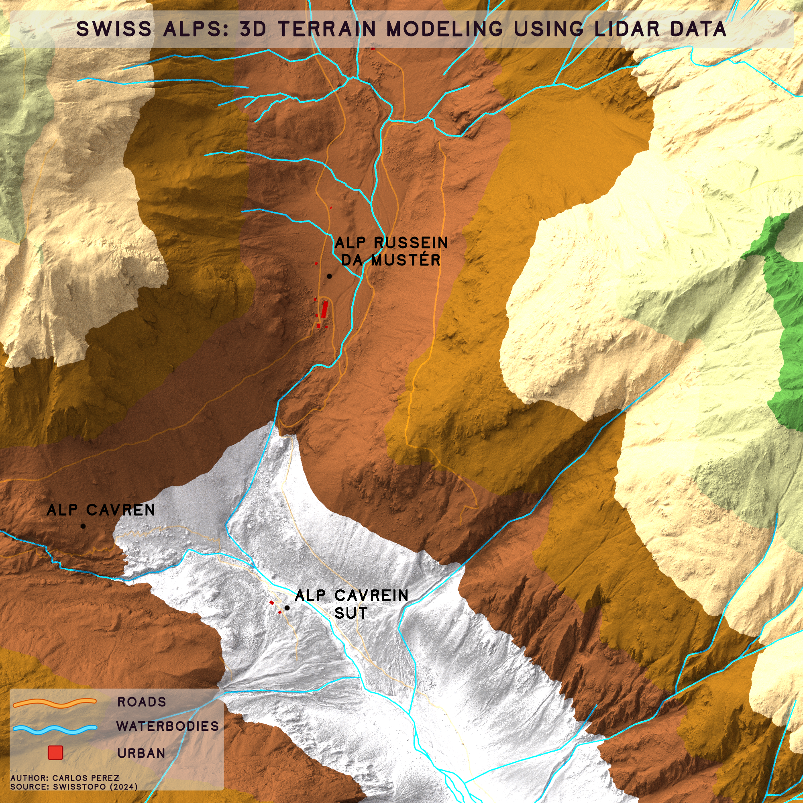
Groundwater Vulnerability Assessment
Maps used for the Groundwater Vulnerability Assessment, in which various natural variables and land classification were considered to determine the vulnerability of several water wells equipped with real-time water quality monitoring systems. These wells are located throughout the province of Alberta, Canada.
The assessment integrates hydrogeological data, land use classification, and intrinsic aquifer susceptibility to produce a comprehensive vulnerability index. This helps in protecting critical groundwater resources and supports decision-making for sustainable water management.
Vulnerability Assessment Maps
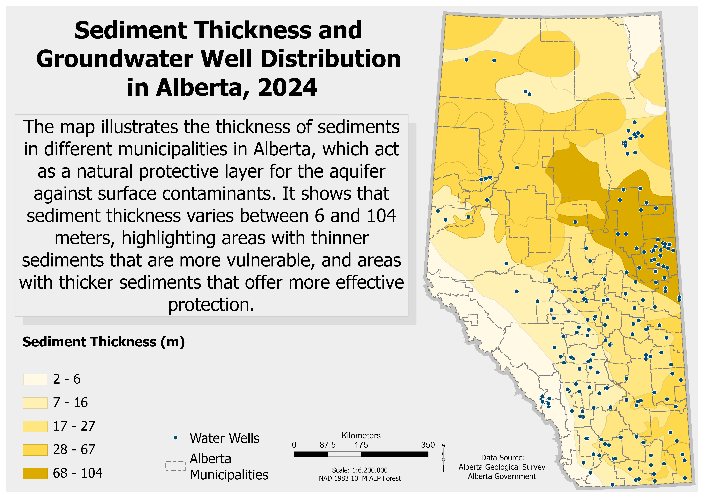
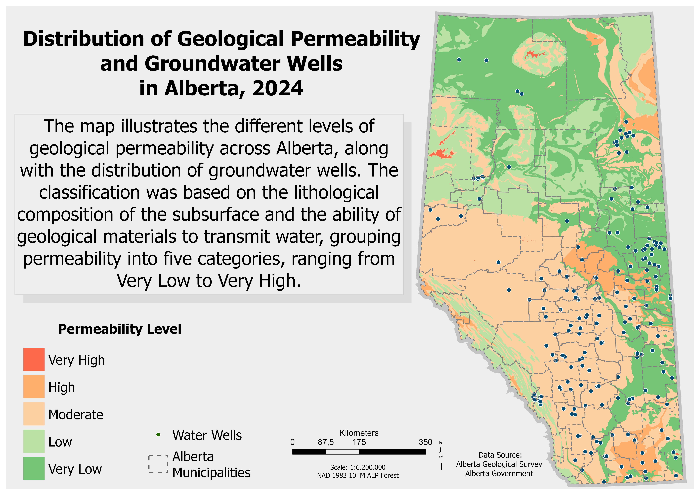